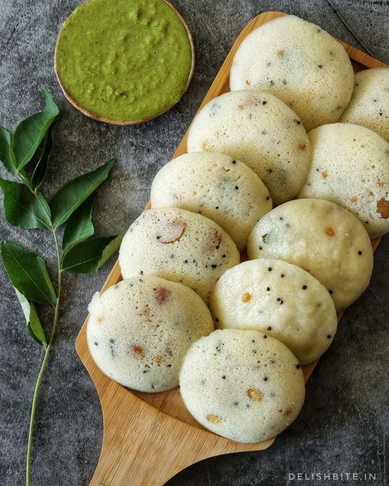

Idli

Description
Idli is a popular South Indian dish that is enjoyed for breakfast or as a snack throughout the day. It is a steamed rice cake made from a fermented batter consisting of ground rice and black lentils (urad dal). The batter is prepared by soaking rice and lentils separately, grinding them into a smooth paste, and then fermenting the mixture overnight.
Ingredients
- 2 tbsp Oil
- 1 tbsp Mustard seeds
- 1 tbsp Gota urad
- ¼ tsp Asafoetida / Hing
- 1 tbsp Red & Green chilli, chopped
- 7-8 cashew, broken
- Salt to taste
- 1 inch Ginger, chopped
- 1 cup Semolina/ Rava
- Oil, for greasing
- ½ cup yoghurt/ fresh or sour
- Coriander leaves, chopped
- A pinch of Asafoetida/ hing
- 1 tbsp fruit salt
For Garnish
Steps
- In a pan heat oil, add mustard seeds, gota urad, Asafoetida, red chill, green chilli and broken cashew saute well.
- Add salt to taste, add ginger and semolina and roast well on medium flame.
- Transfer it to a bowl, add curd and water mix it properly and keep aside for 20 minutes.
- Now add fruit salt and mix well.
- Grease the idli mould, pour the batter and keep half cashew on each.
- Steam at higher temperature for 3-4 minutes.
- Serve with coconut chutney.